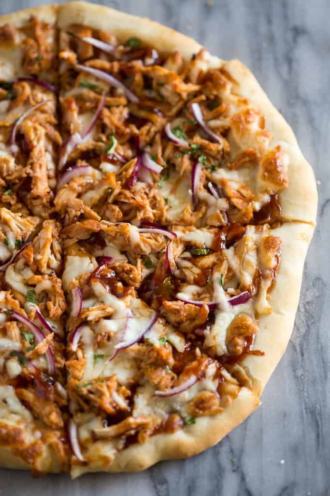

BBQ Chicken Pizza

Description
No restaurant pizza compares to this easy homemade BBQ Chicken Pizza made with bbq sauce, mozzarella, chicken, red onions and cilantro on perfect homemade pizza crust.
We love making homemade pizza on the weekends because it’s easy, cheap, and fun! I save time by using a rotisserie chicken, but any cooked, shredded chicken will work. (Don’t put raw chicken on your pizza or it will not have enough time to cook through). I used that saved time to make favorite homemade pizza dough, but you could also use store-bought.
Ingredients
- Dough for one large pizza
- 1 1/2 cups cooked chicken , shredded rotisserie or about 2 chicken breasts
- 2 cups shredded mozzarella cheese
- 1/2 cup barbecue sauce
- 1/4 large red onion very thinly sliced
- Fresh cilantro to taste
Steps
- Preheat your oven to 450 degrees F and prebake your pizza dough for 6 minutes.
- Spread a thin layer of bbq sauce on top of the pre-baked pizza crust. Then top with a thin layer of mozzarella cheese and sliced red onion.
- Add shredded rotisserie chicken to a bowl and cover it with a few tablespoons of bbq sauce. Toss to combine. Spread chicken pieces over the pizza.
- Sprinkle another thin layer of cheese on top of the pizza, and add chopped cilantro, to taste.
- Bake at 450 F for 10 -15 minutes or until crust is golden brown and cheese is bubbly.
Nutrition
- Calories: 307kcal
- Carbohydrates: 15g
- Protein: 24g
- Fat: 16g
- Saturated Fat: 8g
- Cholesterol: 84mg
- Sodium: 865mg
- Potassium: 247mg
- Sugar: 12g
- Vitamin A: 475IU
- Vitamin C: 0.2mg
- Calcium: 301mg
- Iron: 0.7mg